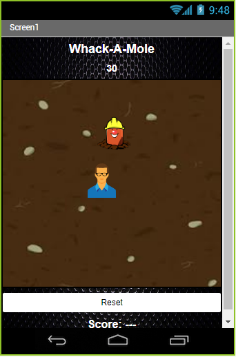
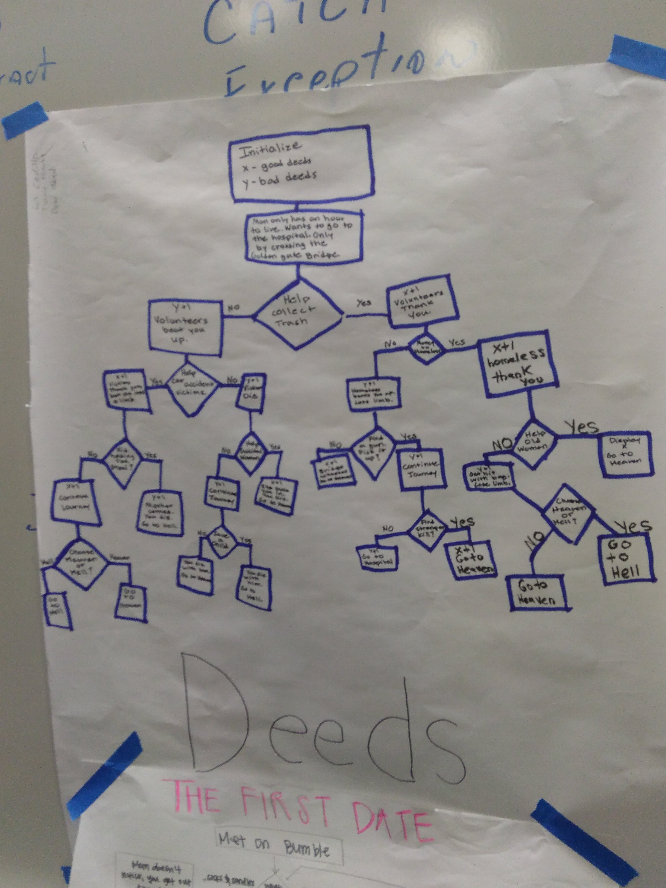

We worked on Scaratch

Our Whack-A Mole project! Don't hit the human or lose points! this was made in MitAppInventor and can be downloaded onto an Android only.
We made a choice game in python called Deeds! It is about a man who has an hour to live and needs to get to the hospital by crossing the bridge. You can run it in a program that runs python.
